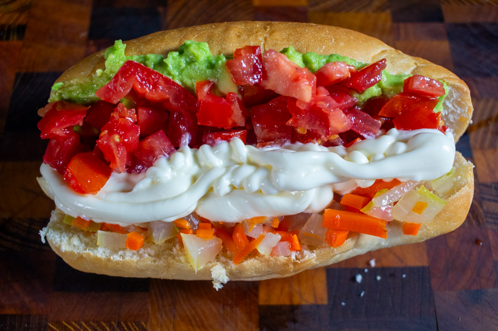

Hot Dog Completo

El hot dog completo es una versión más elaborada del clásico. Incluye salchicha en pan suave acompañada de tomate, palta (aguacate), chucrut y mayonesa, creando una combinación cremosa, fresca y deliciosa. Es muy popular en Chile y otros países de Latinoamérica.